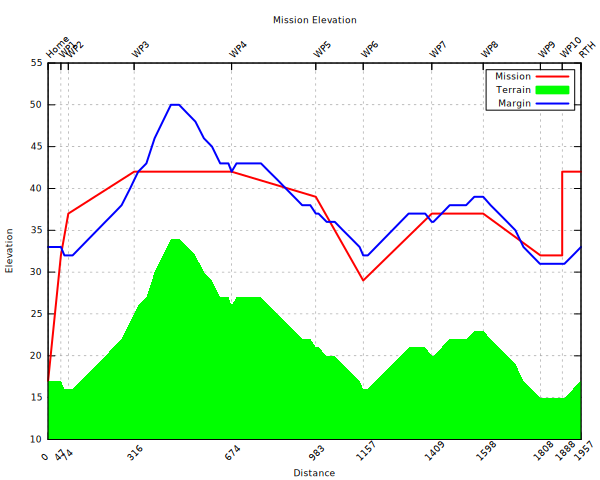

Mission Elevations#
Overview#
Prior to INAV 3.0, mission altitudes are relative to the HOME (arming) location, which is not part of a mission definition. As a result, the pilot has to be ensure by some other means that the mission will clear any raised elevations on the mission path. For INAV 3.0, missions may be either relative to home or absolute (above a datum, see below).
mwp includes a mwp-plot-elevations tool that performs mission and terrain analysis. This tool is platform independent and can be used without mwp for mission terrain analysis.
mwp-plot-elevations can rewrite the mission file with new elevations to provide a specified ground clearance.
Legacy Images
The images this section are from legacy mwp, however the capability is the same.
Video Tutorial & UI integration#
From of 2018-12-06, mwp-plot-elevations is integrated into the mwp application.

There is a video tutorial.
Obsolescence Note
The video uses the older ruby application, but that doesn't really affect basic functionality.
Sample output#
Given the mission shown below:

and knowing that the land rises to the north and west, we can check that we do indeed have adequate clearance with the planned route and elevations:
# for decimal '.' locales
$ mwp-plot-elevations -- home 50.9104826,-1.5350745 --plotfile profile.svg west_field.mission
# for decimal ',' locales
$ mwp-plot-elevations --home "50,9104826 -1,5350745" --plotfile profile.svg west_field.mission
where:
west_field.missionis the MW-XML mission file (via mwp, INAV configurator, [ezgui, mission planner for INAV] or impload)- the
--home lat,lonoption defines the home position (which may also be set by the environment variableMWP_HOME), the command line having preference. Note that for modern mwp generated mission files, this information is provided in the mission file. - The graphical output is
profile.svg, via the--plotfileoption.
The result from this command is an SVG file, which can be displayed with common image tools (eog, ImageMagick display et al). It can also be converted to a raster image using e.g. rsvg-convert); a sample is shown below:

The red line represents the planned mission altitudes (which are defined relative to the estimated home location), and the green area represents the terrain. As we can see, we clear the hill (and other terrain), but cannot guarantee that we have LOS to lowest point of the mission, or that we're clear of the trees.
We can also specify a "clearance" option, in the image below this was set to 16m. Where the blue line is above the red line, one should review that the mission elevations are adequate.

Creating a new mission file#
It is also possible (see command line options below) to write out a new mission that takes into account the clearance (margin parameter). If we then plot this new mission file, we can see that we are at least margin (in this example 16m) distance clear of the terrain.

Note that the original mission elevations are still taken into account. We can also ignore these, so we end up the absolute clearance distance above the terrain.
$ mwp-plot-elevations nm_west_field.mission --output /tmp/p1.mission --no-mission-alts

Dependencies#
The mwp-plot-elevations has NO dependency on mwp or Linux / FreeBSD, it can just as easily be run on MacOS or MS Windows. It does however has some dependencies:
Go version#
-
Go compiler (1.18 or later)
-
gnuplot
gnuplot is easily provided (by your distro or from a binary download).
On all operating systems, the terrain graph is also plotted interactively, regardless of whether the -p (save SVG plot) option has been specified. The following shows the UI on Windows (it's pretty much the same on other OS).

Caveats#
- 3rd party terrain data is not guaranteed, either as to its absolute accuracy, nor to its coverage.
- Terrain data does not take into account other obstacles (trees, buildings, power lines etc).
- The tool does not faithfully model the vehicle motion. As multi-rotor and fixed-wing have different climb behaviours, this would be quite complex.
- RTH altitude has to specified if you wish to model it, and assumes 'AT LEAST' behaviour.
Datum#
Digital elevation services can use the WGS84 Ellipsoid or "sea level"; survey maps typically use AMSL (Above Mean Sea Level); GPS can report either or both of WGS Ellipsoid and above MSL (mean sea level). INAV and mwp both use AMSL.
- mwp currently uses locally (and transparently) hosted Mapzen DEM DEMs to obtain elevations. The user should apply a suitable margin.
- INAV firmware uses the GPS' AMSL value, so INAV and mwp are consistent on this.
There may be a difference between ASML, "sea level", WGS84 Ellipsoid and Survey heights, for example, for a test point of 54.149461 -4.669315 (summit of South Barrule, Isle of Man):
- Ordnance Survey (OS) Map (official survey): 483m
- Mapzen DEM (mwp) 476m
- OpenTopoData: 476m (mapzen)
- OpenTopoData: 485 (aster30m)
- Google Earth : 470m
- Bing Ellipsoid (Configurator): 526m
- Bing "Sea Level" (Configurator): 470m
Note that while OpenTopo appears to be an accurate web service, it has significant issues that mean it is unacceptable as a reliable data source:
- Rate limited to one query per second.
- Limited to 100 points per query (INAV supports 120 point missions...).
- Limited to 1000 queries per 24 hour period.
For these reasons, mwp used locally hosted Mapzen DEMs.
There is a more detailed analysis of the available DEMs on the wiki.
So who's right?#
Many years ago, I took a GPS up South Barrule.

It reads 485m, this pretty much agrees with the OS (Survey) height (AMSL). So the real issue is with the DEM available online (either Bing or Google). The 'sea-level" height DEM reports for this location is c. 13m below Ordnance Survey AMSL value whilst the WGS84 ellipsoid value is 43m above the OS AMSL value.
Command line help and options#
$ mwp-plot-elevations --help
-dump
Dump internal data, exit
-force-alt int
Force Altitude Mode (-1=from mission, 0=Relative, 1=Absolute (default -1)
-home string
home as DD.dddd,DDD.dddd
-keep
Keep intermediate plt files
-margin int
Clearance margin (m)
-no-graph
No interactive plot
-no-mission-alts
Ignore extant mission altitudes
-output string
Revised mission file
-rth-alt int
RTH altitude (m)
-svg string
SVG graph file
-upland
Update landing elevation offset
Note that Go considers -foo and --foo to the equivalent. The ruby script requires the -- notation.
Configuration File#
As well as specifying options such as home location, clearance margin and RTH altitude on the command line (or as an environment variable), some or all of these options may be set in a configuration file.
mwp-plot-elevations looks for options in one of the following (in order) ./.elev-plot.rc (i.e. current directory), $HOME/.config/mwp/elev-plot, and $HOME/.elev-plot.rc. The configuration file is a plain text file containing key=value pairs. Blank lines and lines beginning with # are ignored; the following example illustrates the recognised keys. Note that $HOME/.config/mwp/elev-plot is the preferred location, as this is also used by mwp to populate its graphical dialogue to launch the analysis tool.
# settings for mwp-plot-elevations
margin = 16
home = 50.910476,-1.535038
# for ',' locales
# home = 50,910476 -1,535038
rth-alt=25
# 'sanity' is the home -> WP1 distance check; default if not set here is 100m
sanity = 200
Usage Examples#
# Interactive plot, using the above configuration file:
$ mwp-plot-elevations nm_west_field.mission
# Interactive plot. save SVG file
$ mwp-plot-elevations --plotfile /tmp/mission.svg nm_west_field.mission
# Interactive plot. save SVG file, rewrite mission file
$ mwp-plot-elevations --plotfile /tmp/mission.svg --output new_west_field.mission nm_west_field.mission
# Interactive plot. save SVG file, rewrite mission file, override clearance margin (20m)
$ mwp-plot-elevationsb --plotfile /tmp/mission.svg --outout new_west_field.mission --margin 20 nm_west_field.mission
# Interactive plot. save SVG file, rewrite mission file,
# override clearance margin (20m), reduce RTH altitude (22m)
$ mwp-plot-elevations --plotfile /tmp/mission.svg --output new_west_field.mission --margin 20 --rth-alt 22 nm_west_field.mission
Another contrived example ... create a mission in Google Earth (tied to ground), save as KMZ, convert to MWXML mission file with impload (0 altitude). Use mwp-plot-elevations.rb to calculate a safe mission.
KMZ planned in Google Earth#

Conversion tools#
# convert the saved KMZ file to a MWXML mission file
$ impload convert /tmp/IOM.kmz /tmp/perwick.mission
# Verify the elevations and clearance with plot-elevations.rb
$ mwp-plot-elevations.rb -h 54.068826,-4.735472 -m 40 /tmp/perwick.mission

Looks OK (well, apart from the flying through the hill, due to impload's default altitude of 20m).
If we specify that a new mission file be generated (--output), the updated mission is also plotted, and we can see that this clears the hill.
mwp-plot-elevations --home 54.068826,-4.735472 --margin 40 --output /tmp/perwick-ok.mission /tmp/perwick.mission

It's not yet perfect, we could be more aggressive in reaching just the clearance altitude, but we clear the hill!.
Climb and Dive Angle Report#

As of 2021-06, it's also possible to get climb and dive angles for the calculated mission. Before I added the WP12 => WP7 jump in the mission shown below, it was almost OK; below the desired clearance in a couple of places and just failing to clear the hill at WP15. After adding the JUMP, it hits the terrain pretty conclusively between WP12 and WP7. The modified mission is interesting, as it has to adjust the WPs within the JUMP for the worst case (so the WP7, the second pass is definitive).
The final result:

We also get a climb / dive report, currently to STDOUT and $TMP/mwpmission-angles.txt (tab separated for easy analysis).
$ mwp-plot-elevations --margin 25 -no-mission-alts --output /tmp/n.mission \
--home 54.125205,-4.730322 -rth-alt 40 mwp/missions/IoM/barrule-jump.mission
HOME - WP1 21.3° (climb)
WP1 - WP2 -13.9° (dive)
WP2 - WP3 16.2° (climb)
WP3 - WP4 -8.1° (dive)
WP4 - WP5 11.4° (climb)
WP5 - WP6 4.9° (climb)
WP6 - WP7 -6.6° (dive)
WP7 - WP8 -8.9° (dive)
WP8 - WP9 1.3° (climb)
WP9 - WP10 7.0° (climb)
WP10 - WP11 4.4° (climb)
WP11 - WP12 -11.9° (dive)
WP12 - WP7 0.3° (climb)
WP7 - WP8 -8.9° (dive)
WP8 - WP9 1.3° (climb)
WP9 - WP10 7.0° (climb)
WP10 - WP11 4.4° (climb)
WP11 - WP12 -11.9° (dive)
WP12 - WP14 2.5° (climb)
WP14 - WP15 -5.2° (dive)
WP15 - RTH -3.6° (dive)
If you run mwp-plot-elevations via mwp, the information is presented in a separate window.

mwp can also highlight any legs that exceed user-defined (not 0) climb and dive angle limits. However, it's up to you to work out the best solution.

The steep hill and valley at the start are just too much here; best to reroute.